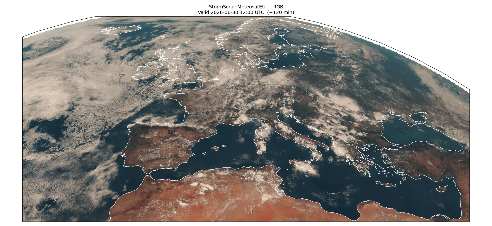

StormScope Meteosat FCI Nowcasting¶
StormScope inference workflow with MTG-I1 FCI satellite imagery.
This example will demonstrate how to run inference to generate nowcasts of Meteosat Third Generation (MTG-I1) FCI satellite imagery using StormScopeMeteosatEU, a generative diffusion model that predicts the next 10-minute FCI frame from a sliding window of recent observations.
In this example you will learn:
- How to instantiate
earth2studio.models.px.StormScopeMeteosatEU - Creating a
earth2studio.data.MeteosatFCIdata source - Fetching FCI observations as the model input
- Running iterative nowcasting
- Plotting an RGB composite of FCI channels with cartopy
Set Up¶
StormScopeMeteosatEU is a pure-observation nowcasting model: it requires no
external NWP conditioning. The only input is a sliding window of L
consecutive FCI frames ending at the analysis time.
The model operates on a rectangular sub-region of the full MTG disk defined
in native FCI pixel coordinates by
[StormScopeMeteosatEU.Model_FCI_BBox][]. We configure
earth2studio.data.MeteosatFCI with the matching pixel_bbox
so that data fetching returns exactly the pixels the model expects, with
no interpolation needed.
EUMETSAT Data Store credentials must be available via the environment
variables EUMETSAT_CONSUMER_KEY and EUMETSAT_CONSUMER_SECRET, or in
the ~/.eumdac/credentials file.
import os
from datetime import datetime, timezone
os.makedirs("outputs", exist_ok=True)
from dotenv import load_dotenv
load_dotenv()
import cartopy.crs as ccrs
import matplotlib.pyplot as plt
import numpy as np
import torch
from tqdm import tqdm
from earth2studio.data import fetch_data
from earth2studio.data.meteosat_fci import (
PERSPECTIVE_POINT_HEIGHT,
SEMI_MAJOR_AXIS,
SEMI_MINOR_AXIS,
MeteosatFCI,
)
from earth2studio.models.px.stormscope_meteosat import StormScopeMeteosatEU
from earth2studio.utils.coords import map_coords
Load Model¶
Load StormScopeMeteosatEU from a package.
device = torch.device("cuda" if torch.cuda.is_available() else "cpu")
package = StormScopeMeteosatEU.load_default_package()
model = StormScopeMeteosatEU.load_model(package=package)
model = model.to(device)
model.eval()
model.compile_model()
Console output249 lines
Downloading config.yaml: 0%| | 0.00/438 [00:00<?, ?B/s]
Downloading config.yaml: 100%|██████████| 438/438 [00:00<00:00, 1.59kB/s]
Downloading config.yaml: 100%|██████████| 438/438 [00:00<00:00, 1.58kB/s]
Downloading StormscopeMTG-low.mdlus: 0%| | 0.00/1.14G [00:00<?, ?B/s]
Downloading StormscopeMTG-low.mdlus: 1%| | 10.0M/1.14G [00:02<04:05, 4.95MB/s]
Downloading StormscopeMTG-low.mdlus: 2%|▏ | 20.0M/1.14G [00:02<01:52, 10.7MB/s]
Downloading StormscopeMTG-low.mdlus: 3%|▎ | 30.0M/1.14G [00:02<01:10, 16.9MB/s]
Downloading StormscopeMTG-low.mdlus: 3%|▎ | 40.0M/1.14G [00:02<00:50, 23.3MB/s]
Downloading StormscopeMTG-low.mdlus: 4%|▍ | 50.0M/1.14G [00:02<00:39, 29.4MB/s]
Downloading StormscopeMTG-low.mdlus: 5%|▌ | 60.0M/1.14G [00:03<00:32, 35.4MB/s]
Downloading StormscopeMTG-low.mdlus: 6%|▌ | 70.0M/1.14G [00:03<00:30, 37.3MB/s]
Downloading StormscopeMTG-low.mdlus: 7%|▋ | 80.0M/1.14G [00:03<00:27, 41.2MB/s]
Downloading StormscopeMTG-low.mdlus: 8%|▊ | 90.0M/1.14G [00:03<00:27, 41.8MB/s]
Downloading StormscopeMTG-low.mdlus: 9%|▊ | 100M/1.14G [00:04<00:34, 32.2MB/s]
Downloading StormscopeMTG-low.mdlus: 9%|▉ | 110M/1.14G [00:04<00:40, 27.5MB/s]
Downloading StormscopeMTG-low.mdlus: 10%|█ | 120M/1.14G [00:05<00:41, 26.4MB/s]
Downloading StormscopeMTG-low.mdlus: 11%|█ | 130M/1.14G [00:05<00:46, 23.3MB/s]
Downloading StormscopeMTG-low.mdlus: 12%|█▏ | 140M/1.14G [00:05<00:38, 27.7MB/s]
Downloading StormscopeMTG-low.mdlus: 13%|█▎ | 150M/1.14G [00:06<00:33, 32.2MB/s]
Downloading StormscopeMTG-low.mdlus: 14%|█▎ | 160M/1.14G [00:06<00:28, 36.5MB/s]
Downloading StormscopeMTG-low.mdlus: 15%|█▍ | 170M/1.14G [00:06<00:26, 39.6MB/s]
Downloading StormscopeMTG-low.mdlus: 15%|█▌ | 180M/1.14G [00:06<00:23, 44.0MB/s]
Downloading StormscopeMTG-low.mdlus: 16%|█▋ | 190M/1.14G [00:06<00:21, 46.8MB/s]
Downloading StormscopeMTG-low.mdlus: 17%|█▋ | 200M/1.14G [00:07<00:21, 48.3MB/s]
Downloading StormscopeMTG-low.mdlus: 18%|█▊ | 210M/1.14G [00:07<00:20, 48.2MB/s]
Downloading StormscopeMTG-low.mdlus: 19%|█▉ | 220M/1.14G [00:07<00:20, 48.6MB/s]
Downloading StormscopeMTG-low.mdlus: 20%|█▉ | 230M/1.14G [00:07<00:22, 43.8MB/s]
Downloading StormscopeMTG-low.mdlus: 21%|██ | 240M/1.14G [00:08<00:20, 46.9MB/s]
Downloading StormscopeMTG-low.mdlus: 21%|██▏ | 250M/1.14G [00:08<00:19, 49.9MB/s]
Downloading StormscopeMTG-low.mdlus: 22%|██▏ | 260M/1.14G [00:08<00:27, 35.2MB/s]
Downloading StormscopeMTG-low.mdlus: 23%|██▎ | 270M/1.14G [00:08<00:23, 40.2MB/s]
Downloading StormscopeMTG-low.mdlus: 24%|██▍ | 280M/1.14G [00:09<00:21, 43.9MB/s]
Downloading StormscopeMTG-low.mdlus: 25%|██▍ | 290M/1.14G [00:09<00:20, 46.0MB/s]
Downloading StormscopeMTG-low.mdlus: 26%|██▌ | 300M/1.14G [00:09<00:20, 45.0MB/s]
Downloading StormscopeMTG-low.mdlus: 27%|██▋ | 310M/1.14G [00:09<00:18, 48.0MB/s]
Downloading StormscopeMTG-low.mdlus: 27%|██▋ | 320M/1.14G [00:10<00:23, 38.2MB/s]
Downloading StormscopeMTG-low.mdlus: 28%|██▊ | 330M/1.14G [00:10<00:24, 35.9MB/s]
Downloading StormscopeMTG-low.mdlus: 29%|██▉ | 340M/1.14G [00:10<00:26, 32.6MB/s]
Downloading StormscopeMTG-low.mdlus: 30%|██▉ | 350M/1.14G [00:11<00:25, 34.0MB/s]
Downloading StormscopeMTG-low.mdlus: 31%|███ | 360M/1.14G [00:11<00:25, 32.8MB/s]
Downloading StormscopeMTG-low.mdlus: 32%|███▏ | 370M/1.14G [00:11<00:25, 32.4MB/s]
Downloading StormscopeMTG-low.mdlus: 33%|███▎ | 380M/1.14G [00:12<00:24, 33.3MB/s]
Downloading StormscopeMTG-low.mdlus: 33%|███▎ | 390M/1.14G [00:12<00:28, 28.7MB/s]
Downloading StormscopeMTG-low.mdlus: 34%|███▍ | 400M/1.14G [00:12<00:24, 33.2MB/s]
Downloading StormscopeMTG-low.mdlus: 35%|███▌ | 410M/1.14G [00:13<00:21, 36.5MB/s]
Downloading StormscopeMTG-low.mdlus: 36%|███▌ | 420M/1.14G [00:13<00:20, 38.8MB/s]
Downloading StormscopeMTG-low.mdlus: 37%|███▋ | 430M/1.14G [00:13<00:18, 41.4MB/s]
Downloading StormscopeMTG-low.mdlus: 38%|███▊ | 440M/1.14G [00:13<00:17, 43.1MB/s]
Downloading StormscopeMTG-low.mdlus: 39%|███▊ | 450M/1.14G [00:13<00:17, 44.3MB/s]
Downloading StormscopeMTG-low.mdlus: 39%|███▉ | 460M/1.14G [00:14<00:16, 45.5MB/s]
Downloading StormscopeMTG-low.mdlus: 40%|████ | 470M/1.14G [00:14<00:15, 46.5MB/s]
Downloading StormscopeMTG-low.mdlus: 41%|████ | 480M/1.14G [00:14<00:14, 49.1MB/s]
Downloading StormscopeMTG-low.mdlus: 42%|████▏ | 490M/1.14G [00:14<00:16, 43.6MB/s]
Downloading StormscopeMTG-low.mdlus: 43%|████▎ | 500M/1.14G [00:15<00:16, 43.1MB/s]
Downloading StormscopeMTG-low.mdlus: 44%|████▎ | 510M/1.14G [00:15<00:21, 31.7MB/s]
Downloading StormscopeMTG-low.mdlus: 45%|████▍ | 520M/1.14G [00:15<00:21, 31.8MB/s]
Downloading StormscopeMTG-low.mdlus: 45%|████▌ | 530M/1.14G [00:16<00:20, 32.6MB/s]
Downloading StormscopeMTG-low.mdlus: 46%|████▌ | 540M/1.14G [00:16<00:17, 37.5MB/s]
Downloading StormscopeMTG-low.mdlus: 47%|████▋ | 550M/1.14G [00:16<00:17, 37.3MB/s]
Downloading StormscopeMTG-low.mdlus: 48%|████▊ | 560M/1.14G [00:16<00:15, 41.9MB/s]
Downloading StormscopeMTG-low.mdlus: 49%|████▉ | 570M/1.14G [00:17<00:13, 46.0MB/s]
Downloading StormscopeMTG-low.mdlus: 50%|████▉ | 580M/1.14G [00:17<00:16, 38.5MB/s]
Downloading StormscopeMTG-low.mdlus: 50%|█████ | 590M/1.14G [00:17<00:15, 38.1MB/s]
Downloading StormscopeMTG-low.mdlus: 51%|█████▏ | 600M/1.14G [00:18<00:17, 35.0MB/s]
Downloading StormscopeMTG-low.mdlus: 52%|█████▏ | 610M/1.14G [00:18<00:15, 37.6MB/s]
Downloading StormscopeMTG-low.mdlus: 53%|█████▎ | 620M/1.14G [00:18<00:15, 37.0MB/s]
Downloading StormscopeMTG-low.mdlus: 54%|█████▍ | 630M/1.14G [00:18<00:16, 33.5MB/s]
Downloading StormscopeMTG-low.mdlus: 55%|█████▍ | 640M/1.14G [00:19<00:20, 27.2MB/s]
Downloading StormscopeMTG-low.mdlus: 56%|█████▌ | 650M/1.14G [00:19<00:17, 31.9MB/s]
Downloading StormscopeMTG-low.mdlus: 56%|█████▋ | 660M/1.14G [00:20<00:17, 31.2MB/s]
Downloading StormscopeMTG-low.mdlus: 57%|█████▋ | 670M/1.14G [00:20<00:14, 36.2MB/s]
Downloading StormscopeMTG-low.mdlus: 58%|█████▊ | 680M/1.14G [00:20<00:13, 38.0MB/s]
Downloading StormscopeMTG-low.mdlus: 59%|█████▉ | 690M/1.14G [00:20<00:12, 41.5MB/s]
Downloading StormscopeMTG-low.mdlus: 60%|█████▉ | 700M/1.14G [00:21<00:13, 35.8MB/s]
Downloading StormscopeMTG-low.mdlus: 61%|██████ | 710M/1.14G [00:21<00:14, 34.2MB/s]
Downloading StormscopeMTG-low.mdlus: 62%|██████▏ | 720M/1.14G [00:21<00:12, 37.0MB/s]
Downloading StormscopeMTG-low.mdlus: 62%|██████▏ | 730M/1.14G [00:21<00:11, 38.9MB/s]
Downloading StormscopeMTG-low.mdlus: 63%|██████▎ | 740M/1.14G [00:22<00:15, 29.6MB/s]
Downloading StormscopeMTG-low.mdlus: 64%|██████▍ | 750M/1.14G [00:22<00:12, 35.0MB/s]
Downloading StormscopeMTG-low.mdlus: 65%|██████▌ | 760M/1.14G [00:22<00:12, 33.0MB/s]
Downloading StormscopeMTG-low.mdlus: 66%|██████▌ | 770M/1.14G [00:23<00:12, 33.9MB/s]
Downloading StormscopeMTG-low.mdlus: 67%|██████▋ | 780M/1.14G [00:23<00:10, 38.8MB/s]
Downloading StormscopeMTG-low.mdlus: 68%|██████▊ | 790M/1.14G [00:23<00:12, 31.0MB/s]
Downloading StormscopeMTG-low.mdlus: 68%|██████▊ | 800M/1.14G [00:24<00:10, 35.7MB/s]
Downloading StormscopeMTG-low.mdlus: 69%|██████▉ | 810M/1.14G [00:24<00:09, 37.8MB/s]
Downloading StormscopeMTG-low.mdlus: 70%|███████ | 820M/1.14G [00:24<00:11, 32.1MB/s]
Downloading StormscopeMTG-low.mdlus: 71%|███████ | 830M/1.14G [00:25<00:09, 36.4MB/s]
Downloading StormscopeMTG-low.mdlus: 72%|███████▏ | 840M/1.14G [00:25<00:10, 31.8MB/s]
Downloading StormscopeMTG-low.mdlus: 73%|███████▎ | 850M/1.14G [00:25<00:10, 30.7MB/s]
Downloading StormscopeMTG-low.mdlus: 74%|███████▎ | 860M/1.14G [00:26<00:09, 33.5MB/s]
Downloading StormscopeMTG-low.mdlus: 74%|███████▍ | 870M/1.14G [00:26<00:08, 35.4MB/s]
Downloading StormscopeMTG-low.mdlus: 75%|███████▌ | 880M/1.14G [00:26<00:07, 40.7MB/s]
Downloading StormscopeMTG-low.mdlus: 76%|███████▌ | 890M/1.14G [00:26<00:06, 43.2MB/s]
Downloading StormscopeMTG-low.mdlus: 77%|███████▋ | 900M/1.14G [00:27<00:09, 28.2MB/s]
Downloading StormscopeMTG-low.mdlus: 78%|███████▊ | 910M/1.14G [00:27<00:08, 33.3MB/s]
Downloading StormscopeMTG-low.mdlus: 79%|███████▊ | 920M/1.14G [00:27<00:07, 34.2MB/s]
Downloading StormscopeMTG-low.mdlus: 80%|███████▉ | 930M/1.14G [00:28<00:06, 37.1MB/s]
Downloading StormscopeMTG-low.mdlus: 80%|████████ | 940M/1.14G [00:28<00:05, 42.2MB/s]
Downloading StormscopeMTG-low.mdlus: 81%|████████▏ | 950M/1.14G [00:28<00:05, 44.6MB/s]
Downloading StormscopeMTG-low.mdlus: 82%|████████▏ | 960M/1.14G [00:28<00:05, 37.7MB/s]
Downloading StormscopeMTG-low.mdlus: 83%|████████▎ | 970M/1.14G [00:29<00:05, 41.1MB/s]
Downloading StormscopeMTG-low.mdlus: 84%|████████▍ | 980M/1.14G [00:29<00:04, 45.5MB/s]
Downloading StormscopeMTG-low.mdlus: 85%|████████▍ | 990M/1.14G [00:29<00:03, 47.9MB/s]
Downloading StormscopeMTG-low.mdlus: 86%|████████▌ | 0.98G/1.14G [00:29<00:03, 51.2MB/s]
Downloading StormscopeMTG-low.mdlus: 86%|████████▋ | 0.99G/1.14G [00:29<00:03, 52.6MB/s]
Downloading StormscopeMTG-low.mdlus: 87%|████████▋ | 1.00G/1.14G [00:29<00:02, 52.4MB/s]
Downloading StormscopeMTG-low.mdlus: 88%|████████▊ | 1.01G/1.14G [00:30<00:02, 51.0MB/s]
Downloading StormscopeMTG-low.mdlus: 89%|████████▉ | 1.02G/1.14G [00:30<00:02, 53.9MB/s]
Downloading StormscopeMTG-low.mdlus: 90%|████████▉ | 1.03G/1.14G [00:30<00:02, 53.2MB/s]
Downloading StormscopeMTG-low.mdlus: 91%|█████████ | 1.04G/1.14G [00:30<00:02, 42.2MB/s]
Downloading StormscopeMTG-low.mdlus: 92%|█████████▏| 1.04G/1.14G [00:31<00:02, 45.4MB/s]
Downloading StormscopeMTG-low.mdlus: 92%|█████████▏| 1.05G/1.14G [00:31<00:01, 47.7MB/s]
Downloading StormscopeMTG-low.mdlus: 93%|█████████▎| 1.06G/1.14G [00:31<00:01, 50.1MB/s]
Downloading StormscopeMTG-low.mdlus: 94%|█████████▍| 1.07G/1.14G [00:31<00:01, 53.0MB/s]
Downloading StormscopeMTG-low.mdlus: 95%|█████████▍| 1.08G/1.14G [00:31<00:01, 53.5MB/s]
Downloading StormscopeMTG-low.mdlus: 96%|█████████▌| 1.09G/1.14G [00:32<00:00, 55.7MB/s]
Downloading StormscopeMTG-low.mdlus: 97%|█████████▋| 1.10G/1.14G [00:32<00:00, 55.5MB/s]
Downloading StormscopeMTG-low.mdlus: 98%|█████████▊| 1.11G/1.14G [00:32<00:00, 57.6MB/s]
Downloading StormscopeMTG-low.mdlus: 98%|█████████▊| 1.12G/1.14G [00:32<00:00, 37.1MB/s]
Downloading StormscopeMTG-low.mdlus: 99%|█████████▉| 1.13G/1.14G [00:33<00:00, 42.0MB/s]
Downloading StormscopeMTG-low.mdlus: 100%|██████████| 1.14G/1.14G [00:33<00:00, 45.8MB/s]
Downloading StormscopeMTG-low.mdlus: 100%|██████████| 1.14G/1.14G [00:33<00:00, 36.9MB/s]
Downloading StormscopeMTG-high.mdlus: 0%| | 0.00/1.14G [00:00<?, ?B/s]
Downloading StormscopeMTG-high.mdlus: 1%| | 10.0M/1.14G [00:01<03:15, 6.22MB/s]
Downloading StormscopeMTG-high.mdlus: 2%|▏ | 20.0M/1.14G [00:01<01:31, 13.1MB/s]
Downloading StormscopeMTG-high.mdlus: 3%|▎ | 30.0M/1.14G [00:02<00:58, 20.4MB/s]
Downloading StormscopeMTG-high.mdlus: 3%|▎ | 40.0M/1.14G [00:02<00:45, 26.1MB/s]
Downloading StormscopeMTG-high.mdlus: 4%|▍ | 50.0M/1.14G [00:02<00:35, 32.8MB/s]
Downloading StormscopeMTG-high.mdlus: 5%|▌ | 60.0M/1.14G [00:02<00:40, 28.4MB/s]
Downloading StormscopeMTG-high.mdlus: 6%|▌ | 70.0M/1.14G [00:03<00:37, 30.6MB/s]
Downloading StormscopeMTG-high.mdlus: 7%|▋ | 80.0M/1.14G [00:03<00:31, 36.2MB/s]
Downloading StormscopeMTG-high.mdlus: 8%|▊ | 90.0M/1.14G [00:03<00:27, 41.4MB/s]
Downloading StormscopeMTG-high.mdlus: 9%|▊ | 100M/1.14G [00:03<00:25, 44.7MB/s]
Downloading StormscopeMTG-high.mdlus: 9%|▉ | 110M/1.14G [00:03<00:22, 49.1MB/s]
Downloading StormscopeMTG-high.mdlus: 10%|█ | 120M/1.14G [00:04<00:21, 51.6MB/s]
Downloading StormscopeMTG-high.mdlus: 11%|█ | 130M/1.14G [00:04<00:25, 42.3MB/s]
Downloading StormscopeMTG-high.mdlus: 12%|█▏ | 140M/1.14G [00:04<00:23, 46.7MB/s]
Downloading StormscopeMTG-high.mdlus: 13%|█▎ | 150M/1.14G [00:04<00:21, 49.9MB/s]
Downloading StormscopeMTG-high.mdlus: 14%|█▎ | 160M/1.14G [00:04<00:20, 52.6MB/s]
Downloading StormscopeMTG-high.mdlus: 15%|█▍ | 170M/1.14G [00:05<00:19, 55.0MB/s]
Downloading StormscopeMTG-high.mdlus: 15%|█▌ | 180M/1.14G [00:05<00:28, 35.8MB/s]
Downloading StormscopeMTG-high.mdlus: 16%|█▋ | 190M/1.14G [00:05<00:25, 39.5MB/s]
Downloading StormscopeMTG-high.mdlus: 17%|█▋ | 200M/1.14G [00:06<00:22, 44.2MB/s]
Downloading StormscopeMTG-high.mdlus: 18%|█▊ | 210M/1.14G [00:06<00:21, 47.8MB/s]
Downloading StormscopeMTG-high.mdlus: 19%|█▉ | 220M/1.14G [00:06<00:19, 50.7MB/s]
Downloading StormscopeMTG-high.mdlus: 20%|█▉ | 230M/1.14G [00:06<00:18, 53.8MB/s]
Downloading StormscopeMTG-high.mdlus: 21%|██ | 240M/1.14G [00:06<00:17, 56.2MB/s]
Downloading StormscopeMTG-high.mdlus: 21%|██▏ | 250M/1.14G [00:06<00:16, 57.8MB/s]
Downloading StormscopeMTG-high.mdlus: 22%|██▏ | 260M/1.14G [00:07<00:16, 58.9MB/s]
Downloading StormscopeMTG-high.mdlus: 23%|██▎ | 270M/1.14G [00:07<00:15, 59.9MB/s]
Downloading StormscopeMTG-high.mdlus: 24%|██▍ | 280M/1.14G [00:07<00:15, 60.8MB/s]
Downloading StormscopeMTG-high.mdlus: 25%|██▍ | 290M/1.14G [00:07<00:15, 61.2MB/s]
Downloading StormscopeMTG-high.mdlus: 26%|██▌ | 300M/1.14G [00:07<00:14, 60.8MB/s]
Downloading StormscopeMTG-high.mdlus: 27%|██▋ | 310M/1.14G [00:07<00:14, 61.4MB/s]
Downloading StormscopeMTG-high.mdlus: 27%|██▋ | 320M/1.14G [00:08<00:14, 60.4MB/s]
Downloading StormscopeMTG-high.mdlus: 28%|██▊ | 330M/1.14G [00:08<00:14, 58.8MB/s]
Downloading StormscopeMTG-high.mdlus: 29%|██▉ | 340M/1.14G [00:08<00:23, 37.2MB/s]
Downloading StormscopeMTG-high.mdlus: 30%|██▉ | 350M/1.14G [00:08<00:20, 41.9MB/s]
Downloading StormscopeMTG-high.mdlus: 31%|███ | 360M/1.14G [00:09<00:35, 23.7MB/s]
Downloading StormscopeMTG-high.mdlus: 32%|███▏ | 370M/1.14G [00:10<00:29, 28.4MB/s]
Downloading StormscopeMTG-high.mdlus: 33%|███▎ | 380M/1.14G [00:10<00:32, 25.4MB/s]
Downloading StormscopeMTG-high.mdlus: 33%|███▎ | 390M/1.14G [00:10<00:26, 30.6MB/s]
Downloading StormscopeMTG-high.mdlus: 34%|███▍ | 400M/1.14G [00:10<00:22, 36.3MB/s]
Downloading StormscopeMTG-high.mdlus: 35%|███▌ | 410M/1.14G [00:11<00:19, 41.3MB/s]
Downloading StormscopeMTG-high.mdlus: 36%|███▌ | 420M/1.14G [00:11<00:17, 45.7MB/s]
Downloading StormscopeMTG-high.mdlus: 37%|███▋ | 430M/1.14G [00:11<00:15, 49.6MB/s]
Downloading StormscopeMTG-high.mdlus: 38%|███▊ | 440M/1.14G [00:11<00:14, 52.5MB/s]
Downloading StormscopeMTG-high.mdlus: 39%|███▊ | 450M/1.14G [00:11<00:13, 55.1MB/s]
Downloading StormscopeMTG-high.mdlus: 39%|███▉ | 460M/1.14G [00:11<00:13, 57.0MB/s]
Downloading StormscopeMTG-high.mdlus: 40%|████ | 470M/1.14G [00:12<00:12, 58.3MB/s]
Downloading StormscopeMTG-high.mdlus: 41%|████ | 480M/1.14G [00:12<00:12, 58.6MB/s]
Downloading StormscopeMTG-high.mdlus: 42%|████▏ | 490M/1.14G [00:12<00:11, 59.8MB/s]
Downloading StormscopeMTG-high.mdlus: 43%|████▎ | 500M/1.14G [00:12<00:11, 59.9MB/s]
Downloading StormscopeMTG-high.mdlus: 44%|████▎ | 510M/1.14G [00:12<00:11, 60.6MB/s]
Downloading StormscopeMTG-high.mdlus: 45%|████▍ | 520M/1.14G [00:12<00:11, 59.6MB/s]
Downloading StormscopeMTG-high.mdlus: 45%|████▌ | 530M/1.14G [00:13<00:11, 59.8MB/s]
Downloading StormscopeMTG-high.mdlus: 46%|████▌ | 540M/1.14G [00:13<00:10, 60.1MB/s]
Downloading StormscopeMTG-high.mdlus: 47%|████▋ | 550M/1.14G [00:13<00:10, 59.9MB/s]
Downloading StormscopeMTG-high.mdlus: 48%|████▊ | 560M/1.14G [00:13<00:10, 60.3MB/s]
Downloading StormscopeMTG-high.mdlus: 49%|████▉ | 570M/1.14G [00:13<00:10, 61.0MB/s]
Downloading StormscopeMTG-high.mdlus: 50%|████▉ | 580M/1.14G [00:14<00:11, 53.2MB/s]
Downloading StormscopeMTG-high.mdlus: 50%|█████ | 590M/1.14G [00:14<00:11, 55.1MB/s]
Downloading StormscopeMTG-high.mdlus: 51%|█████▏ | 600M/1.14G [00:14<00:10, 56.5MB/s]
Downloading StormscopeMTG-high.mdlus: 52%|█████▏ | 610M/1.14G [00:14<00:11, 52.2MB/s]
Downloading StormscopeMTG-high.mdlus: 53%|█████▎ | 620M/1.14G [00:14<00:11, 49.0MB/s]
Downloading StormscopeMTG-high.mdlus: 54%|█████▍ | 630M/1.14G [00:15<00:11, 48.1MB/s]
Downloading StormscopeMTG-high.mdlus: 55%|█████▍ | 640M/1.14G [00:15<00:13, 42.2MB/s]
Downloading StormscopeMTG-high.mdlus: 56%|█████▌ | 650M/1.14G [00:15<00:12, 42.6MB/s]
Downloading StormscopeMTG-high.mdlus: 56%|█████▋ | 660M/1.14G [00:16<00:13, 38.4MB/s]
Downloading StormscopeMTG-high.mdlus: 57%|█████▋ | 670M/1.14G [00:16<00:12, 43.0MB/s]
Downloading StormscopeMTG-high.mdlus: 58%|█████▊ | 680M/1.14G [00:16<00:10, 47.2MB/s]
Downloading StormscopeMTG-high.mdlus: 59%|█████▉ | 690M/1.14G [00:16<00:09, 50.9MB/s]
Downloading StormscopeMTG-high.mdlus: 60%|█████▉ | 700M/1.14G [00:16<00:09, 53.8MB/s]
Downloading StormscopeMTG-high.mdlus: 61%|██████ | 710M/1.14G [00:17<00:10, 47.7MB/s]
Downloading StormscopeMTG-high.mdlus: 62%|██████▏ | 720M/1.14G [00:17<00:09, 51.4MB/s]
Downloading StormscopeMTG-high.mdlus: 62%|██████▏ | 730M/1.14G [00:17<00:10, 42.7MB/s]
Downloading StormscopeMTG-high.mdlus: 63%|██████▎ | 740M/1.14G [00:17<00:09, 46.3MB/s]
Downloading StormscopeMTG-high.mdlus: 64%|██████▍ | 750M/1.14G [00:18<00:11, 37.5MB/s]
Downloading StormscopeMTG-high.mdlus: 65%|██████▌ | 760M/1.14G [00:18<00:10, 40.0MB/s]
Downloading StormscopeMTG-high.mdlus: 66%|██████▌ | 770M/1.14G [00:18<00:09, 42.6MB/s]
Downloading StormscopeMTG-high.mdlus: 67%|██████▋ | 780M/1.14G [00:18<00:08, 46.1MB/s]
Downloading StormscopeMTG-high.mdlus: 68%|██████▊ | 790M/1.14G [00:18<00:08, 49.4MB/s]
Downloading StormscopeMTG-high.mdlus: 68%|██████▊ | 800M/1.14G [00:19<00:07, 52.1MB/s]
Downloading StormscopeMTG-high.mdlus: 69%|██████▉ | 810M/1.14G [00:19<00:06, 54.7MB/s]
Downloading StormscopeMTG-high.mdlus: 70%|███████ | 820M/1.14G [00:19<00:06, 56.9MB/s]
Downloading StormscopeMTG-high.mdlus: 71%|███████ | 830M/1.14G [00:19<00:06, 58.0MB/s]
Downloading StormscopeMTG-high.mdlus: 72%|███████▏ | 840M/1.14G [00:19<00:05, 58.3MB/s]
Downloading StormscopeMTG-high.mdlus: 73%|███████▎ | 850M/1.14G [00:19<00:05, 59.0MB/s]
Downloading StormscopeMTG-high.mdlus: 74%|███████▎ | 860M/1.14G [00:20<00:05, 56.1MB/s]
Downloading StormscopeMTG-high.mdlus: 74%|███████▍ | 870M/1.14G [00:20<00:05, 53.0MB/s]
Downloading StormscopeMTG-high.mdlus: 75%|███████▌ | 880M/1.14G [00:20<00:05, 54.5MB/s]
Downloading StormscopeMTG-high.mdlus: 76%|███████▌ | 890M/1.14G [00:20<00:05, 52.9MB/s]
Downloading StormscopeMTG-high.mdlus: 77%|███████▋ | 900M/1.14G [00:20<00:05, 52.9MB/s]
Downloading StormscopeMTG-high.mdlus: 78%|███████▊ | 910M/1.14G [00:21<00:04, 54.9MB/s]
Downloading StormscopeMTG-high.mdlus: 79%|███████▊ | 920M/1.14G [00:21<00:05, 48.5MB/s]
Downloading StormscopeMTG-high.mdlus: 80%|███████▉ | 930M/1.14G [00:21<00:04, 51.7MB/s]
Downloading StormscopeMTG-high.mdlus: 80%|████████ | 940M/1.14G [00:21<00:04, 54.4MB/s]
Downloading StormscopeMTG-high.mdlus: 81%|████████▏ | 950M/1.14G [00:21<00:04, 55.9MB/s]
Downloading StormscopeMTG-high.mdlus: 82%|████████▏ | 960M/1.14G [00:22<00:03, 57.6MB/s]
Downloading StormscopeMTG-high.mdlus: 83%|████████▎ | 970M/1.14G [00:22<00:03, 58.9MB/s]
Downloading StormscopeMTG-high.mdlus: 84%|████████▍ | 980M/1.14G [00:22<00:03, 60.0MB/s]
Downloading StormscopeMTG-high.mdlus: 85%|████████▍ | 990M/1.14G [00:22<00:03, 59.5MB/s]
Downloading StormscopeMTG-high.mdlus: 86%|████████▌ | 0.98G/1.14G [00:22<00:02, 59.2MB/s]
Downloading StormscopeMTG-high.mdlus: 86%|████████▋ | 0.99G/1.14G [00:22<00:02, 60.3MB/s]
Downloading StormscopeMTG-high.mdlus: 87%|████████▋ | 1.00G/1.14G [00:23<00:03, 51.1MB/s]
Downloading StormscopeMTG-high.mdlus: 88%|████████▊ | 1.01G/1.14G [00:23<00:02, 53.7MB/s]
Downloading StormscopeMTG-high.mdlus: 89%|████████▉ | 1.02G/1.14G [00:24<00:04, 29.4MB/s]
Downloading StormscopeMTG-high.mdlus: 90%|████████▉ | 1.03G/1.14G [00:24<00:04, 27.8MB/s]
Downloading StormscopeMTG-high.mdlus: 91%|█████████ | 1.04G/1.14G [00:24<00:03, 33.4MB/s]
Downloading StormscopeMTG-high.mdlus: 92%|█████████▏| 1.04G/1.14G [00:24<00:02, 37.0MB/s]
Downloading StormscopeMTG-high.mdlus: 92%|█████████▏| 1.05G/1.14G [00:25<00:02, 36.2MB/s]
Downloading StormscopeMTG-high.mdlus: 93%|█████████▎| 1.06G/1.14G [00:25<00:02, 36.4MB/s]
Downloading StormscopeMTG-high.mdlus: 94%|█████████▍| 1.07G/1.14G [00:25<00:01, 41.2MB/s]
Downloading StormscopeMTG-high.mdlus: 95%|█████████▍| 1.08G/1.14G [00:26<00:01, 39.3MB/s]
Downloading StormscopeMTG-high.mdlus: 96%|█████████▌| 1.09G/1.14G [00:26<00:01, 44.3MB/s]
Downloading StormscopeMTG-high.mdlus: 97%|█████████▋| 1.10G/1.14G [00:26<00:00, 45.7MB/s]
Downloading StormscopeMTG-high.mdlus: 98%|█████████▊| 1.11G/1.14G [00:26<00:00, 36.8MB/s]
Downloading StormscopeMTG-high.mdlus: 98%|█████████▊| 1.12G/1.14G [00:27<00:00, 36.7MB/s]
Downloading StormscopeMTG-high.mdlus: 99%|█████████▉| 1.13G/1.14G [00:27<00:00, 36.5MB/s]
Downloading StormscopeMTG-high.mdlus: 100%|██████████| 1.14G/1.14G [00:27<00:00, 41.0MB/s]
Downloading StormscopeMTG-high.mdlus: 100%|██████████| 1.14G/1.14G [00:27<00:00, 44.5MB/s]
Downloading metadata.nc: 0%| | 0.00/32.2M [00:00<?, ?B/s]
Downloading metadata.nc: 31%|███ | 10.0M/32.2M [00:01<00:02, 7.97MB/s]
Downloading metadata.nc: 62%|██████▏ | 20.0M/32.2M [00:01<00:01, 11.3MB/s]
Downloading metadata.nc: 93%|█████████▎| 30.0M/32.2M [00:02<00:00, 13.2MB/s]
Downloading metadata.nc: 100%|██████████| 32.2M/32.2M [00:02<00:00, 12.6MB/s]Set Up Data Sources¶
MeteosatFCI is configured with pixel_bbox matching the model's
domain (Model_FCI_BBox) so that the returned y/x scan-angle
coordinates align with what the model expects.
Meteosat FCI visible and NIR channels are provided by the EUMETSAT data store at 1 km resolution while IR channels are 2 km. The StormScope MTG model uses the 2 km grid for all channels, so we need to pull data from both 1 km and 2 km sources and do a minimal regrid on the visible and NIR channels.
Here we will set up data sources for both grid resolutions. The 1 km grid is exactly 2 times the pixels of the 2 km grid, so we get the 1 km bounding box by doubling the 2 km bounding box.
bbox_2km = StormScopeMeteosatEU.Model_FCI_BBox
FCI_BBox = {"2km": bbox_2km}
FCI_BBox["1km"] = (
(2 * bbox_2km[0][0], 2 * bbox_2km[0][1]),
(2 * bbox_2km[1][0], 2 * bbox_2km[1][1]),
)
fci = {
res: MeteosatFCI(resolution=res, pixel_bbox=bbox)
for (res, bbox) in FCI_BBox.items()
}
Fetch Initial Condition¶
We fetch initial window of 6 consecutive FCI frames ending at
the chosen analysis time. fetch_data calls the data source at
start_time + lead_time for each lead-time offset defined by the model
([-50 min, -40 min, ..., 0 min] for a 6-frame window).
StormScope MTG uses the 2 km grid for all channels, so we use
StormScopeMeteosatEU.combine_1km_2km_inputs to resize the channels
retrieved from the 1 km data source.
# Start time; replace with any time for which MTG-I1 FCI data is available.
# StormScopeMeteosatEU was trained on November 2024 - May 2026 data; start times
# should generally be outside that period.
start_time = np.datetime64(datetime(2026, 6, 30, 12, 0, 0, tzinfo=timezone.utc))
in_coords = model.input_coords()
variables = in_coords["variable"]
with torch.no_grad():
x_res = {}
for res in ["2km", "1km"]:
available_vars = fci[res].available_variables()
if res == "1km":
# use 2km version if variable available in both 1km and 2km
available_vars -= fci["2km"].available_variables()
variables_res = [var for var in variables if var in available_vars]
x_res[res] = fetch_data(
fci[res],
time=np.array([start_time]),
variable=variables_res,
lead_time=in_coords["lead_time"],
device=device,
)
# 2x downsample 1km data to common 2km grid
x, coords = StormScopeMeteosatEU.combine_1km_2km_inputs(
*x_res["1km"], *x_res["2km"]
)
del x_res
# ensure data is on model grid (reorders variables if needed)
x, coords = map_coords(x, coords, in_coords)
Console output35 lines
Downloading MTG products: 0%| | 0/1 [00:00<?, ?it/s]
Downloading MTG products: 100%|██████████| 1/1 [00:00<00:00, 208.26it/s]
Downloading MTG products: 0%| | 0/1 [00:00<?, ?it/s]
Downloading MTG products: 100%|██████████| 1/1 [00:00<00:00, 86.46it/s]
Downloading MTG products: 0%| | 0/1 [00:00<?, ?it/s]
Downloading MTG products: 100%|██████████| 1/1 [00:00<00:00, 65.91it/s]
Downloading MTG products: 0%| | 0/1 [00:00<?, ?it/s]
Downloading MTG products: 100%|██████████| 1/1 [00:00<00:00, 85.31it/s]
Downloading MTG products: 0%| | 0/1 [00:00<?, ?it/s]
Downloading MTG products: 100%|██████████| 1/1 [00:00<00:00, 70.54it/s]
Downloading MTG products: 0%| | 0/1 [00:00<?, ?it/s]
Downloading MTG products: 100%|██████████| 1/1 [00:00<00:00, 68.43it/s]
Downloading MTG products: 0%| | 0/1 [00:00<?, ?it/s]
Downloading MTG products: 100%|██████████| 1/1 [00:00<00:00, 494.96it/s]
Downloading MTG products: 0%| | 0/1 [00:00<?, ?it/s]
Downloading MTG products: 100%|██████████| 1/1 [00:00<00:00, 65.13it/s]
Downloading MTG products: 0%| | 0/1 [00:00<?, ?it/s]
Downloading MTG products: 100%|██████████| 1/1 [00:00<00:00, 63.69it/s]
Downloading MTG products: 0%| | 0/1 [00:00<?, ?it/s]
Downloading MTG products: 100%|██████████| 1/1 [00:00<00:00, 59.04it/s]
Downloading MTG products: 0%| | 0/1 [00:00<?, ?it/s]
Downloading MTG products: 100%|██████████| 1/1 [00:00<00:00, 63.18it/s]
Downloading MTG products: 0%| | 0/1 [00:00<?, ?it/s]
Downloading MTG products: 100%|██████████| 1/1 [00:00<00:00, 111.98it/s]Add Ensemble Dimension¶
The model expects input of shape (ensemble, time, lead_time, variable, y, x).
Up to GPU memory limits, ensemble_size can be increased to produce multiple
independent ensemble members in a single forward pass.
ensemble_size = 1
x = x.expand(ensemble_size, -1, -1, -1, -1, -1)
coords["ensemble"] = np.arange(ensemble_size)
coords.move_to_end("ensemble", last=False)
Execute the Nowcast¶
create_iterator handles the autoregressive rollout for us: the first
yielded value is the (unchanged) initial condition, and each subsequent
value advances the prediction by one 10-minute interval.
n_steps = 12 # 2 hours of 10-minute forecast steps
for step, (x_pred, coords_pred) in enumerate(
tqdm(model.create_iterator(x, coords), total=n_steps + 1)
):
if step == n_steps:
break
Console output13 lines
0%| | 0/13 [00:00<?, ?it/s]
15%|█▌ | 2/13 [00:41<03:49, 20.87s/it]
23%|██▎ | 3/13 [01:06<03:42, 22.29s/it]
31%|███ | 4/13 [01:30<03:26, 22.99s/it]
38%|███▊ | 5/13 [01:54<03:07, 23.44s/it]
46%|████▌ | 6/13 [02:18<02:45, 23.70s/it]
54%|█████▍ | 7/13 [02:42<02:23, 23.87s/it]
62%|██████▏ | 8/13 [03:07<01:59, 23.99s/it]
69%|██████▉ | 9/13 [03:31<01:36, 24.08s/it]
77%|███████▋ | 10/13 [03:55<01:12, 24.14s/it]
85%|████████▍ | 11/13 [04:19<00:48, 24.18s/it]
92%|█████████▏| 12/13 [04:44<00:24, 24.21s/it]
92%|█████████▏| 12/13 [05:08<00:25, 25.71s/it]Post Processing¶
Plot the final predicted FCI frame as a true-color RGB composite (VIS 0.6 /
0.5 / 0.4 µm) in geostationary projection. Off-Earth pixels are already set
to NaN by denormalize.
rgb_channels = ["fci06vis", "fci05vis", "fci04vis"]
ch_idx = [list(model.variables).index(ch) for ch in rgb_channels]
# x_pred has shape (batch, time, 1, variable, y, x)
# here we approximately replicate EUMETSAT's recipe for "true-colour" RGB
rgb = (x_pred[0, 0, 0, ch_idx] / 24.0).clamp(min=0, max=1) * 255
rgb = rgb.permute(1, 2, 0).cpu().numpy()
rgb = np.interp(rgb, [0, 30, 60, 120, 190, 255], [0, 110, 160, 210, 240, 255]) / 255.0
proj = ccrs.Geostationary(
central_longitude=0.0,
satellite_height=PERSPECTIVE_POINT_HEIGHT,
globe=ccrs.Globe(semimajor_axis=SEMI_MAJOR_AXIS, semiminor_axis=SEMI_MINOR_AXIS),
)
extent = MeteosatFCI.projection_extent(resolution="2km", pixel_bbox=bbox_2km)
aspect = (extent[1] - extent[0]) / (extent[3] - extent[2])
fig_height = 8
fig = plt.figure(figsize=(fig_height * aspect, fig_height))
ax = fig.add_subplot(1, 1, 1, projection=proj)
ax.set_xlim(extent[0], extent[1])
ax.set_ylim(extent[2], extent[3])
ax.coastlines(color="white", linewidth=0.8)
im = ax.imshow(rgb, transform=proj, extent=extent, origin="lower")
valid_time = coords_pred["time"][0]
valid_time = datetime.fromisoformat(str(valid_time)).strftime("%Y-%m-%d %H:%M")
lead_min = coords_pred["lead_time"][0].astype("timedelta64[m]").item()
lead_min = int(lead_min / np.timedelta64(1, "m"))
ax.set_title(
f"StormScopeMeteosatEU — RGB\n" f"Valid {valid_time} UTC (+{lead_min} min)"
)
fig.tight_layout()
fig.savefig("outputs/04_stormcast_meteosat_example.png", dpi=150)
print("Saved outputs/04_stormcast_meteosat_example.png")
Console output1 line
Saved outputs/04_stormcast_meteosat_example.png